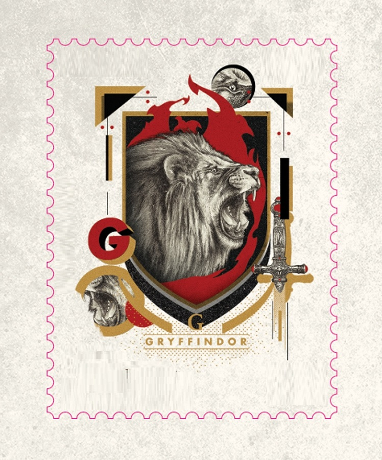

Personagens Principais
História Grifinória
Nome em inglês: Gryffindor
Criador por: Godric Gryffindor
Animal símbolo: Leão
Fantasma: Sir Nicholas de Mimsy-Porpington (Nick Quase-Sem-Cabeça)
Membros mais conhecidos são: Albus Dumbledore, Rubeus Hagrid, Minerca McConagall, Harry Potter, Ronald Weasly, Hermione Granger e outros.
História: Lar dos bravos e cavalheiros, o símbolo da Grifinória apresenta em seu estandarte um orgulhoso leão, acompanhado das cores vermelha e amarelo-dourada. A Casa valoriza feitos de coragem e superação pessoal que costumam ser realizados por altruísmo. Seus estudantes tendem a ser bastante aventureiros, mas se destacam, sobretudo, pela lealdade.